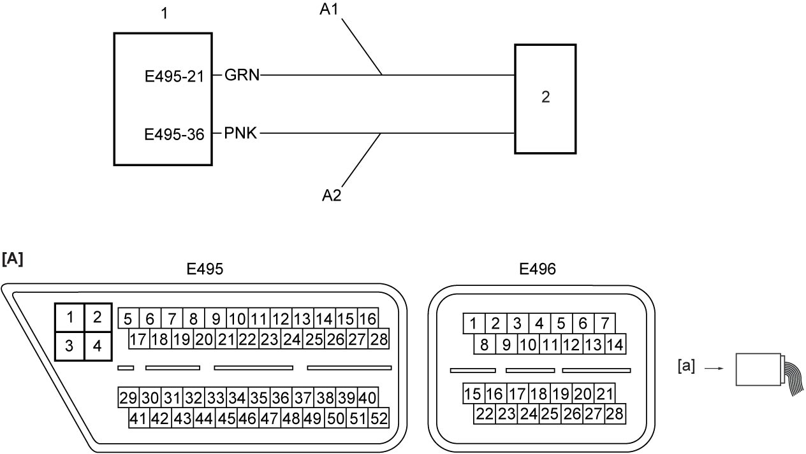

5F
| DTC P19A4-12 / P19DC-19 / P19DC-22 / P19DC-24 / P19DD-61 / P19DD-62 / P19DE-16 / P19DE-18 / P19DE-21 / P19DE-23 |
DTC Detecting Condition and Trouble Area
| DTC detecting condition | Trouble area |
|---|---|
|
P19A4-12: Smart Drive Unit Feedback Circuit – Circuit Short to Battery Circuit is shorted to power supply. (1 D/C detection logic but transmission warning light does not light up) |
•Smart drive unit and/or circuit
•TCM |
|
P19DC-19: Pump Always On – Circuit Current Above Threshold Circuit current is higher than specified value. (1 D/C detection logic) |
|
|
P19DC-22: Pump Always On – Signal Amplitude > Maximum Hydraulic pump OFF is not commanded but hydraulic pressure sensor output is increasing for specified time. (1 D/C detection logic) |
|
|
P19DC-24: Pump Always On – Signal Stuck High Hydraulic pump OFF is not commanded but hydraulic pressure sensor output is increasing for specified time. (1 D/C detection logic) |
|
|
P19DD-61: Smart Drive Unit Feedback Signal – Signal Calculation Failure Hydraulic pump OFF/ON is commanded but hydraulic pressure sensor output is not increasing and smart drive unit (voltage regulator) feedback status indicates pump ON/OFF. (1 D/C detection logic) |
|
|
P19DD-62: Smart Drive Unit Feedback Signal – Signal Compare Failure Hydraulic pump OFF/ON is commanded but hydraulic pressure sensor output is not increasing and smart drive unit (voltage regulator) feedback status indicates pump ON/OFF. (1 D/C detection logic) |
|
|
P19DE-16: Pump Always Off – Circuit Voltage Below Threshold Circuit voltage is lower than specified value. (1 D/C detection logic) |
|
|
P19DE-18: Pump Always Off – Circuit Current Below Threshold Circuit current is lower than specified value. (1 D/C detection logic) |
|
|
P19DE-21: Pump Always Off – Signal Amplitude < Minimum Hydraulic pump ON is commanded but hydraulic pressure sensor output is not increasing for specified time. (1 D/C detection logic) |
|
|
P19DE-23: Pump Always Off – Signal Stuck Low Hydraulic pump ON is commanded but hydraulic pressure sensor output is not increasing for specified time. (1 D/C detection logic) |
•Smart drive unit and/or circuit
•TCM |
Circuit Diagram

 "Expand image")
| [A]: | TCM connector (View: [a]) | A2: | Smart drive unit signal circuit 2 | 2. | Smart drive unit |
| A1: | Smart drive unit signal circuit 1 | 1. | TCM |
DTC Confirmation Procedure
If you do not select a suitable route and take proper precautions when performing a road test, an accident can occur.
•Select a level road with no traffic to minimize the risk of accident.
•Perform the test extremely carefully.
•Perform the road test with 2 persons, a driver and a tester.
•Perform the test extremely carefully.
•Perform the road test with 2 persons, a driver and a tester.
NOTE:
Check that the following condition is satisfied in this procedure.
•11 V < Battery voltage < 15 V
1)Start engine and drive vehicle.
DTC Troubleshooting
| Step | Action | Yes | No |
|---|---|---|---|
| 1 |
Was “Twin Clutch System Check” performed?
|
Go to Step 2.
|
Go to Twin Clutch System Check.
|
| 2 |
Smart drive unit signal circuit check
1)With ignition “OFF”, disconnect “E495” connector from TCM and smart drive unit connector.
2)Check for proper terminal connection to “E495” connector and smart drive unit connector.
3)If connections are OK, check the following points.
•Resistance of “A1” and “A2” circuit: less than 1 Ω
•Resistance between “A1” and “A2” circuit and ground: infinity •Resistance between “A1” circuit terminal and other terminal at smart drive unit connector: infinity •Resistance between “A2” circuit terminal and other terminal at smart drive unit connector: infinity •Voltage of “A1” and “A2” circuit: approx. 0 V (When ignition is “ON”). Is check result OK?
|
Replace smart dive unit.
If this DTC is detected again, replace TCM and recheck DTC.
|
Repair or replace defective wire harness.
|